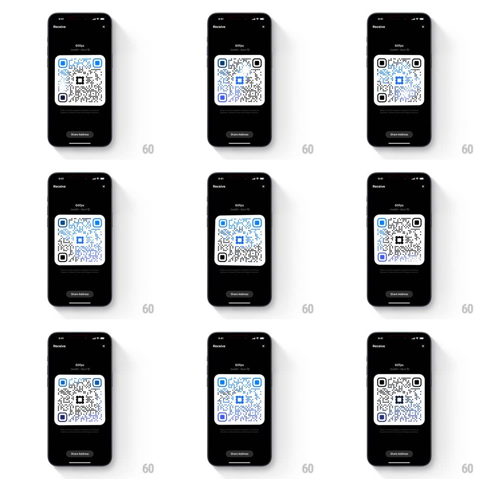

Media
Frame-by-frame

Rebuild this interaction 1:1: Family's QR swipe color morph - on the "Receive" screen, horizontal swipes across the QR code scrub it through a sequence of styled states: each swipe morphs the code's colors (blue, purple, mixed black/blue finder patterns) and pixel styling, with the transition rippling across the modules in the swipe direction.

Rebuild this interaction 1:1: Family's QR swipe color morph - on the "Receive" screen, horizontal swipes across the QR code scrub it through a sequence of styled states: each swipe morphs the code's colors (blue, purple, mixed black/blue finder patterns) and pixel styling, with the transition rippling across the modules in the swipe direction.
## Integration
Integration: stack-agnostic spec - springs given as stiffness/damping, timed motions as duration + curve; map every value to your framework and animation library of choice.
## Scene
Black "Receive" screen: a large QR code ("60fps" label above), caption text below, and a "Share Address" button at the bottom.
## Motion spec
Pattern: gesture-scrubbed style morph.
- Swipe: the QR's style state follows the horizontal gesture - as the finger moves, modules crossfade toward the next theme's colors in a wave that travels in the swipe direction (modules nearest the swipe edge change first, rippling across, ~400ms full sweep at full swipe velocity).
- The finger position scrubs the transition progress (0 -> 1 mapped to swipe distance); reversing the swipe mid-way plays the morph backward.
- Release past halfway: the transition completes with a spring (spring ~380/24, 300ms) and the code settles in the new theme (finder squares, center logo, and module tint all updated); release before halfway: everything springs back to the previous theme.
- The label, caption, and Share Address button stay static - only the code morphs.
## Calibration
- The morph is scrubbed, not triggered - progress tracks the gesture, giving direct manipulation.
- The ripple is directional: it always travels with the swipe, never against it.
## Reduced motion
Swipe commits the theme change with a 200ms crossfade; no scrub or ripple.
## Don't miss
- Mid-gesture reversal is supported - the morph runs both directions smoothly.
- Themes differ in both color and pixel style (round vs square modules) - both interpolate.